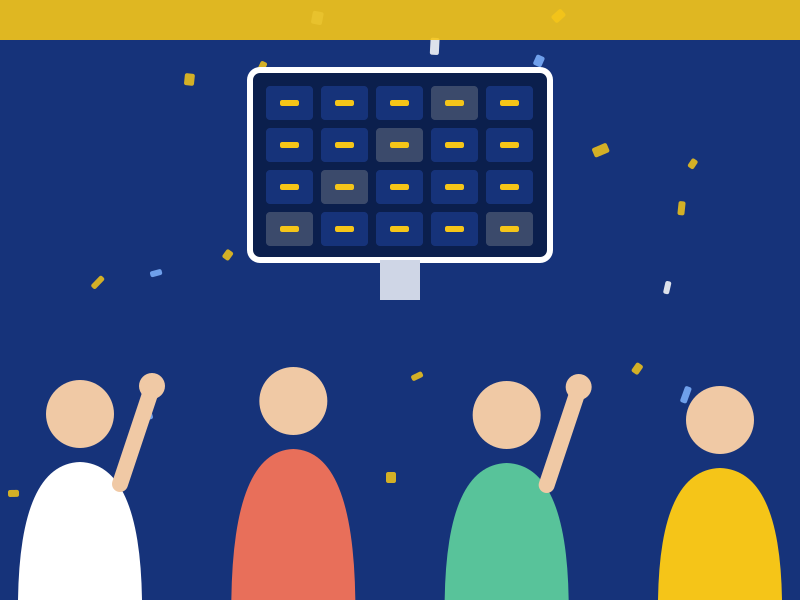

Par mums
Kā radās "Viktorīnu vakars" un kāpēc tieši šāds spēles formāts.
Kā viss sākās
Ideja radās, gatavojot viktorīnu draugu ballītei. Jautājumi bija sarakstīti uz papīra, punktus skaitīja uz salvetes, un pusē spēles neviens vairs neatcerējās, kurai komandai cik ir.
Tāpēc tapa šī vietne. Tā rāda laukumu uz lielā ekrāna, pati skaita punktus un ļauj izveidot savus jautājumus. Viss strādā pārlūkā un latviešu valodā.
Vietni izstrādāja R. S. kā kursa darbu Latvijas Biozinātņu un tehnoloģiju universitātē.

Kāpēc Jeopardy formāts
Šis formāts ir pazīstams no TV šova, kas ASV tiek rādīts kopš 1964. gada. Tam ir trīs lietas, kas labi der pasākumiem.
Komandas izvēlas pašas
Katrs var izvēlēties tēmu, kurā jūtas drošs.
Risks un taktika
Dārgāki jautājumi dod vairāk punktu, bet kļūda arī maksā vairāk.
Viss redzams
Visi redz laukumu un punktus, tāpēc spēle ir caurskatāma.
Projekts skaitļos
| Rādītājs | Vērtība |
|---|---|
| Gatavie jautājumu krājumi | 6 |
| Jautājumi kopā | 150 |
| Komandu skaits vienā spēlē | no 2 līdz 6 |
| Vietnes lapas | 18 |
| Vajadzīga reģistrācija | nē |